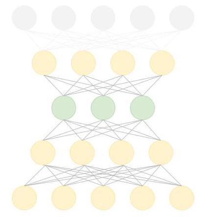
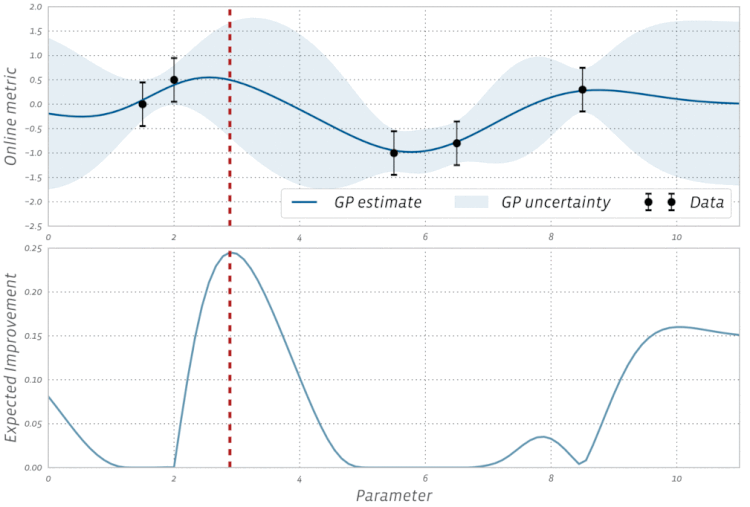

这是从medium上看到的一篇用当前各种牛逼AI技术进行股价趋势预测的神文，原文已经被点赞上万次，Github上star数1.7k，原文链接，GitHub链接。相信绝大部分人初看这篇文章，都会惊叹于其涵盖技术范围之广泛、理论实战之兼并，以及似乎重新点燃了多少在股票价格预测中折戟并深以为股价不可预测的众生，尤其看到末尾作者贴出的模型预测结果，无不令人大喊一声卧槽。但，所谓事出反常必有妖，这么牛逼这么准确的股价预测模型难道没有过拟合或者其他错漏吗？
作者没有在Github上放出数据和模型源码，仅是在notebook中贴出了部分代码，自从作者今年1月份放出文章后似乎就闭关了，再无任何更新，对众多评论与issue都没回复，不得不引人注意的是，博客评论和issue中频繁出现的两点质疑：
- 傅立叶变换不当使用：特征工程中的傅里叶变换进行构造的时候似乎是对全部数据进行变换，而不是仅针对训练集，这样存在数据泄漏的问题。
- 缺乏关键科学性结果：文章中缺乏关键实验结果，无准确度等评价指标，无baseline对比，没有用其他股票样本进行预测等等。
作为一个集大成的AI技术应用于股价趋势预测的神文，其框架中各种技术应用的逻辑和角度还是值得肯定，尤其是行文中不乏科普讲解，作为一篇综述也很有可取之处。
本文在对其做翻译的基础上，力争不引入一个公式，同时加入一些更本土化的知识和自己的理解，与君共享。由于整个体系涉及的知识面太过广泛，难免有浅薄之处，还请海涵。
1. 引言
股价作为一个庞杂的系统，其精准预测历来是一个极其高难度的事情，因为各种事件的偶发性，多种类多人群的情绪博弈。要进行股价预测，那就要先做一些前提假设来让它符合可预测的条件：
- 市场不是完全随机（比如有预期，情绪煽动）
- 历史会重复（照葫芦画瓢，刻舟求剑）
- 市场以人的意志为转移（所有人的博弈，甚至坐庄）
- 市场是“完美”的（不完美的市场就不好预测了）
2. 数据
本文以美股纽约证券交易所上市的Goldman Sachs（NYSE: GS）作为目标，预测其股价涨跌。分别使用 1585 天和 680 天的股价数据作为训练集和测试集（分别占比70%，30%），除了股价这种原始特征外，其他特征数据还包括：
- 关联资产：诸如板块趋势、汇率、指数等
- 技术指标：比如MACD，布林线，5/10/20天线
- 基本面指标：包括公司评估指标ROE、PE，公司日报（文本提取后情感分类）等。当然由于不同来源不同，直觉地可认为不同来源的特征应该赋予不同的权重，即注意力机制也可以派上用场
- 傅里叶变换：时序数据提取频域特征（不恰当类比，耳朵听到的一个钟声，在频域上就是一个静止的音符）
- ARIMA：时序预测的经典模型，二阶差分组合的线性模型，可以用来去噪和特征提取
- Stacked autoencoders：典型的就是神经网络，用来挖掘隐含特征，通俗来说就是用另一个角度看数据。部分前面提到的特征是相关研究人员多年总结提炼出来的，但特征之间隐含着的关联信息是不容易被捕捉到的,举个粗糙的例子，例如ROE > k + MACD交叉 + 行业主营产品价格上涨 + 国际top工厂相关业务调整策略 这样几个因子我们还比较好挖掘，但如果成千上万个因子作为特征输入时，相互之间的关联信息是很难的，而autoencoders的设计就是用来挖掘隐信息的。
2.1 特征
针对不同的特征数据采取何种技术进行提取呢？像关联资产、技术指标、傅里叶变换、ARIMA这些数字指标不需要过多笔墨，一两个公式就可以得到。但像从研报等文本数据中提取特征，就涉及到自然语言处理了。
本文作者使用的是谷歌提出来的BERT框架，一种预训练了的语言表示模型，本质还是可以理解为一种高阶版本的Word2Vec（本博客第一篇有提到），借用单词与单词能组合构成一句话，句子与句子组合构成文章的这种关联，通过一定方式能够得到每个单子每个句子的数字化表达，一个直接的感官是数字化后的同义词之间的距离也更接近，比如说女王和夫人的点坐标距离就比女王和苹果更接近。
BERT 模型的应用有两种方式，一种是 fine-tune（微调） 方法，一种是 feature extract（特征抽取） 方法。fine tune方法指的是加载预训练好的 Bert 模型，其实就是一堆网络权重的值，当做一个初始化的参数，是一种常见的迁移学习手段。
feature extract（特征抽取）方法指的是调用预训练好的 Bert 模型，对新任务的句子做句子编码，将任意长度的句子编码成定长的向量。编码后，作为你自己设计的某种模型（例如 LSTM、SVM 等都由你自己定）的输入，等于说将 BERT 作为一个句子特征编码器，这种方法没有反向传播训练过程，简单来说就是一个函数，把句子变为数字特征。
本文采用的正是feature extract，另外BERT也有中文版本，github有集成了bert的keras、pytorch等接口的开源库。
2.2 特征工程
由于特征过多，需要做一些特征筛选或者叫预处理，包括剔除异方差、多重共线性、序列相关等，这些都是统计上经常需要考量的。
回归分析
多重共线性（Multicollinearity）是指线性回归模型中的自变量之间由于存在高度相关关系而使模型的权重参数估计失真或难以估计准确的一种特性，多重是指一个自变量可能与多个其他自变量之间存在相关关系。因为传统的统计线性回归中都是假设各个变量之间的独立同分布，例如一件商品的销售数量可能与当地的人均收入和当地人口数这两个其他因素存在相关关系，所以预测利润的时候这三个变量都放进去就会出现多重共线性。多重共线性会导致模型预测方差变大，置信度降低，自然地就出现了多重共线性检验方法、残差分析等。
但在机器学习模型中，对数据就没有独立同分布这样的假设，线性模型会有惩罚项（Lasso/Ridge）来应对，非线性模型比如决策树，它在节点分裂的时候选择增益最大的特征作为分裂的特征也不会有这样的问题。归根结底还是不做假设，只通过目标函数最优化求解来避免了，这可能也是梯度求解和OLS之间的一些差异吧。
XGBoost
经过所有的特征处理后，可能特征依然还是太多（吐槽，可能是没见过生物数据，先天的特征数远大于样本数），但不是所有的特征都是有价值的，或者特征可能会很冗余不利于计算，本文作者采用XGBoost来进行权重的挑选。XGBoost是一种决策树模型，每一个节点就是一个特征分裂点，按照增益最大化的策略进行分裂，详细的理论阐述可以参见博客[1]（PS：不过个人建议是使用LightGBM，后起之秀，相对XGBoost做了不少优化，速度更快）。由于特征众多，作者只用XGBoost对技术指标进行了特征权重测试，并发现所有特征都值得被保留，所测试的特征及其权重见下图，从图中可见，MA7、MACD权重更高。
Autoencoder
前面提到，自编码机是用来提取特征的隐含表示的，可以理解为把输入特征先A转化为B（大部分是做了降维），然后重新转换变为A，也就是构造了两个映射，先A -> B 再从B->A返还为也是输入，中间的B就是我们挖掘出来的多特征之间的隐含信息。其通常实现方式是多层神经网络，如下图所示，中间绿色就是我们所有得到的目标B。
本文通过Autoencoder获得了112维度的特征，之后实验性地使用PCA进一步进行了特征降维。自此，特征全部构建完毕。
3. GAN
GAN被称为“左右互搏术”，由生成器$G$（模仿）和判别器$D$（裁判）两大部分构成，给定真实数据（通常是图片），希望通过模型学到数据的分布。两部分的具体功能是：
- 生成器：使用随机初始化的数据试着去生成和真实数据一样分布的数据。
- 判别器: 真实的数据和城市的数据投喂给后面的判别器进行判断，判别器试着分别出输入来自于生成器还是真实样本。
在训练的时候，也是分阶段分布训练$G$和$D$，第一阶段：固定$D$，训练$G$，第二阶段：固定$G$，训练$D$，第三阶段：不断迭代以上两步。所以，生成器$G$的目标就是尽量生成真实的数据去欺骗判别器$D$，而判别器D的目标就是尽量把$G$生成的图片和真实的图片分别开来。这样，$G$和$D$构成了一个动态的“博弈过程”。最后博弈的结果是什么？在最理想的状态下，$G$可以生成足以“以假乱真”的图片$G(z)$。对于$D$来说，它难以判定G生成的图片究竟是不是真实的，因此$D(G(z)) = 0.5$。
因此，GAN模型有几下几个有点：
- 能更好的建模原始数据的分布
- 不需要生成器满足比如高斯分布的条件
- 可以不用通常在复杂的概率生成模型中出现的变分推断或者MCMC采样
但也有几个缺点：
- 难训练，不稳定，生成器和判别器之间需要很好的同步，但是在实际训练中很容易$D$收敛，$G$发散。
- 模式崩塌（Mode Collapse）问题。GANs的学习过程可能出现生成器开始退化，总是生成同样的样本点，无法继续学习。
因此也出现了许多改进的GAN模型，比如典型的DCGAN、WGAN等，本文在此不展开。
3.1 为什么选择GAN？
通常GAN被用来生成图片、视频，几无用于时序数据的预测。然而GAN的本质还是概括数据的分布，一个不失偏颇的假设是股票的模式和行为在时间上是或多或少具有一致性的，所以理论上，从历史数据中生成具有相同分布的未来数据是可行的。于是，作者使用LSTM作为时序预测的生成器，使用CNN用作判别器。
3.2 MHGAN and WGAN
如果可以训练一个完美的生成器，那么生成器最终的概率密度函数应与真实数据的概率密度函数相同。然而，许多现有的 GAN 无法很好地收敛到真实数据的分布 ，因此从这种不完美的生成器中抽样会产生看起来不像原始训练数据的样本。另一方面，判别器中却包含有原始真实数据分布的信息，可用于生成器的校正。如果我们有一个完美的判别器 D 和一个不完美的生成器 $G$，使用 $p(D)$ 而不是 $p(G)$ 作为生成的概率密度函数等价于使用一个新的生成器 $G’$，并且这个 $G’$是可以完美地模拟真实数据分布的。那么，如果结合D来构造新型的生成器成为了GAN的一个发展重要的方向。
Metropolis-Hastings GAN（MHGAN）就是随着这样的想法由Uber提出来的，另一个比较经典的是Google提出的判别器拒绝重采样（Discriminator Rejection Sampling，DRS）。MHGAN是继续保留$D$，每次$G$生成k个输出后，$D$首先生成k个生成样本的判别概率，然后通过MH采样方法最终输出一个生成样本。而DRS与MHGAN的区别是采样方式的区别，之所以采样来近似原始的分布，是因为原始分布本身不太好直接求得。
由于上文中提到的GAN不稳定等缺点，本文采用了改进的Wasserstein GAN（WGAN），主要是舍弃来传统的两个分布相似度度量的KL散度，采用了Wasserstein distance作为损失函数，更详细的理论可以查看其论文。
3.3 生成器-RNN
LSTM/GRU
RNN通常用来做时序预测，因为其能结合先前所有时间点的信息，发现时序中的模式。RNN的两个经典代表是GRU和LSTM，二者在结构设计上有些许不一样，但在大部分场景中二者输出表现差不多，但LSTM被更多的使用。更多理论详细介绍，可以查阅论文或参考LSTM博客
3.4 判别器-CNN
CNN能够逐层提取特征，因而在图像中广泛使用，例如在动物图像识别中，浅层卷积网络会捕获到边的信息，更深一层的开始检测圆形，再继而检测到鼻子、嘴型等，知道能识别出整体。而在股票预测中，一些点形成小趋势，一些小趋势形成更大趋势，直到形成一种模式，这种特征适合CNN来捕捉。此外，CNN先天对数据的空间信息能更有效的利用，即空间上临近的点能够同时被处理，在股票应用中则是临近时间的数据应该比更远时间的点更亲近。当然股价的周期性也是应用CNN需要考虑的。
作者提示：使用CNN用来时序数据的预测只是实验性的尝试，未有理论上的证明。
4. 超参数优化
常见的超参数有：网络结构，包括神经元之间的连接关系、层数、每层的神经元数量、激活函数的类型；优化参数，包括优化方法、学习率、小批量的样本数量；正则化系数等等。
而超参数优化主要存在两方面的困难：
- 超参数优化是一个组合优化问题，牵一发而动全身，无法像一般参数那样通过梯度下降法来优化。
- 评估一组超参数配置的时间代价非常高，从而导致一些优化方（如演化算法等）在超参数优化中难以应用。每调整一次超参数必须重新训练才能评估效果，这在模型很大的时候效率会非常低。
对于超参数设置，比较简单的方法有人工搜索、网格搜索和随机搜索。
参数调优是大家比较熟悉的是随机搜索、网格搜索，进阶版的有贝叶斯优化，进化算法，这些都是在比较固定的超参数空间中进行最优配置搜索，而最重要的神经网络架构一般还是需要由有经验的专家来进行设计。于是，神经网络搜索应运而生，其出现就是为了解决如何通过机器策略和自动化的方式设计出优秀高效的网络，2017年谷歌大脑就使用强化学习的搜索方法。
本文也借用了强化学习的思想，尝试在超参数优化的过程中，引入强化学习的机制来调配贝叶斯优化器进行参数更新。具体来说，就是在GAN训练每200个epochs时记录MAE，然后将其投喂到强化学习中来决定是否更新参数。
4.1 强化学习
由于股票瞬息万变，即使当前训练的模型能够得到比较好的结果，但这结果也可能是短期时间区间内比较有效，而模型参数不变的情况下，长期表现就不佳，这里面符合直觉的假设是股票趋势是随着时间动态变化的。所以模型长期的优化就显得很有必要，而这时候强化学习就派上用场了，方式包括特征的增删以及模型优化（主要还是调参）。
提示：本章是探索性研究，强化学习也只是超参调优的一个方式。
4.1.1 强化学习理论
一个比较简单生动的强化学习例子是“巴普洛夫的狗”：每次给狗送食物以前打开红灯、响起铃声。这样经过一段时间以后，铃声一响或红灯一亮，狗就开始分泌唾液。其实这是培养了狗狗的后天条件反射，如果把我们的模型比如成“狗狗”，那么模型训练目标就可以类比为让”狗狗“学会一种条件反射，比如alpha Go就是让它学会对方每下一步棋，“狗狗”能下出一步大概率稳赢的棋。既然是后天习得，训练中必须要有反馈，巴普洛夫是用铃声和红灯当了正向的奖励性质刺激物，那么必然的反响调节的惩罚刺激也是有的。就像泡脚时水温冷了加点热水，烫了就加点冷水这种正反方向的不断调节来达到预期目标，强化学习里也存在这样的机制。
假设有一个智能体，它可以根据外部环境采取行动从而改善自己的状态，同时获得奖励，而强化学习就是这样一个智能体与环境不断发生交互的循环过程。这种过程有一个专有的学名叫：“马尔可夫决策过程”，所谓马尔可夫是指当前状态只与上一个状态有关，与之前历史上其他任何状态无关的一种定义，而要理解马尔可夫过程，需要先介绍一个基本概念：
1. 状态（state） 智能体在每个步骤中所处的状态集合
2. 行为（action）智能体在每个步骤中所能执行的动作集合
3. 转移概率（transition）智能体处于状态s下，执行动作a后，回转移到另一个状态s‘的概率
4. 奖励（reward）智能体处于状态s下，执行完动作a后，转移到状态s’后获得的立即奖励
5. 策略（policy）智能体处于s下，应该执行动作a的概率
马尔可夫过程在不断迭代的过程中，在满足一定条件下（大部分情况都是可以直接假设满足条件），数学上可以证明马尔可夫过程必定达到一个稳定状态，即马尔可夫收敛性，收敛性意思就是说迭代次数多了是可以找到最优解的。而且马尔可夫过程的应用领域非常广，在强化学习、机器学习、运筹学、生物进化、粒子物理等等领域中都有发挥作用。在一个规划问题上，我亲身见识到了用天河计算机暴力穷举都无法在有效时间内破解的难题被马尔可夫给解决了。马尔可夫过程挺有趣的，简单粗暴，但是蕴含着深刻的数据哲理，哲理就不展开了。
4.1.2 Rainbow
本文使用了一种无模型的强化学习框架Rainbow，并定义reward为GAN中G和D两模块中的指标LossG 、LossD和AccG的线性组合，action定义为超参数的调整。
Rainbow是一种融合了多种Q-learning改进方法的深度强化学习算法。
Q-learning是强化学习中的valve-based算法，Q即$Q(s,a)$表示的是在某一时刻的s状态下采取动作a获得的收益的期望，与环境反馈的reward、财务动作变化前后的value都有关，每次使用最优的Q来更新$Q(s,a)$同时采取相应动作，迭代直到收敛（还记得前面提到的马尔可夫收敛性吗？）。不同（有限）的 $(s, a)$ 组合的Q值构成一个表格称为Q-table，收敛后的Q-label就是当前问题的最优解，可以看一个经典迷宫小游戏的例子。
Rainbow融合的方法(参阅博客[2])：
- DQN：深度Q-网络，大多数情况下描述所有的状态和动作的Q-table是很困难的，毕竟s和a的值空间可能是非常多，有限内存无法全部概括。于是，值函数的思想被派上了用场：一个函数，输入为s和a，输入为Q，于是目标变成为拟合一个函数，能够实现(s,a)到Q的映射，属于机器学习的回归范畴，继而有监督方法中诸如线性回归、决策树甚至神经网络都可以应用进来，而DQN就是使用神经网络来代替Q-table。具体里面的训练样本、loss构建可参阅相关文献。
- Double Q Learning：DQN作者在设计模型的时候，提供了两个解决器：1，replay buffer，强化学习训练时会把历史上的动作状态组合值按时间循序保存在经验回放池中，然后可以利用随机均匀采样经验池中样本数据提供给智能体训练而不是每次只用当前最新的状态；2，fixed Q-target，DQN使用定期迭代更新的方式更新目标值计算中的拟合网络参数，而不是一直更新。但是，在标准的DQN中，取最大值的操作都是使用相同的Q值来选择和评估下一个action，这样一直选择最优的action会容易出现过拟合，所以Double Q使用增加了另外一套参数，一套参数决定了greedy方式找到最优解的值空间，另外一套参数决议值空间中挑选值，而之前的参数是默认直接搜索并返回一个最优值。
- Prioritized Experience Replay：标准DQN构建了一个replay buffer并均匀采样，而PER要解决的问题是如何最有效地选择经验回放池中的样本进行学习，也就是利用历史资料衡量每个动作序列样本的重要性，按不同权重值进行采样。
- Dueling networks：在DQN中神经网络直接输出每个动作的Q值，而Dueling DQN输出的Q值则有两部分构成：Q= 状态价值V+优势函数A，优势函数的作用是，对一个特定状态，采取一个动作所能得到的价值与这个状态能得到的平均价值的区别，如果相比平均价值大，那么优势函数为正，反之为负，有点像均值归一化作为附加的注意力机制。
- Noisy Nets：通过学习网络权重的扰动来促进策略的探索，主要认为对权重向量的微小更改会造成多个时间步中引发一致且可能非常复杂的状态相关的策略的更改。NoisyNets就是在构建网络的时候加入高斯扰动，增加模型的鲁棒性，本质上是多加了一些参数让网络更复杂来一点。
- Categorical DQN：其核心思想是通过模型概括出奖惩值的分布，而不是之前像之前DQN学习的是分布的期望。
- Multi-step Learning：每一步中不再是计算当前动作和状态值，而是通过计算后面N步的值来决定当前的Q值。
这些对Q-learning的改进有点类似于SGD、Adam中的演进机理，从计算的有效、速度上的快慢与贪婪、鲁棒性等等角度对模型做满足一定假设条件下的优化，让每一度迭代更安全更稳定更高效。
4.1.2 PPO
Rainbow中的各种算法顺是基于值函数（Value-based），还有基于策略（Policy-based）的如确定性策略梯度算法DPG，以及第三种基于深度强化学习的信赖域优化（Trust Region based），信赖域（Trust Region）方法指在该区域内更新，策略所实现的回报值单调不减，典型代表就是PPO、TRPO、ACER等。其实主要是解决基于策略的深度强化学习中步长收敛的问题而提出来的，现在很多好的算法和方法都是用了这样的方法。
近端策略优化（Proximal Policy Optimization，PPO）是一种model-free类型的强化学习方法，2017年由OpenAI提出，OpenAI做的打dota的也是用PPO实现的，其优势是可以直接学习策略而不是通过学习Q矩阵来推导策略，在连续动作空间中很有效。 据介绍这种算法用在强化学习中时表现能达到甚至超过现有算法的顶尖水平，同时还更易于实现和调试，总之是简单高效。但从来没有免费的午餐，PPO要达到不错的效果，但其对迭代次数非敏感。
4.2 贝叶斯优化
机器学习模型超参数调优一般认为是一个黑盒优化问题，所谓黑盒问题就是我们在调优的过程中只看到模型的输入和输出，不能获取模型训练过程的梯度信息，也不能假设模型超参数和最终指标符合凸优化条件，否则的话我们通过求导或者凸优化方法就可以求导最优解，不需要使用这些黑盒优化算法，而实际上大部分的模型超参数也符合这个场景。另外模型的训练过程是相对计算量大的，不能通过快速计算获取大量样本，因而大家都很熟悉的自动调参算法Grid search在相当多场景下难以适用，相继的有许多调参方法，比较出名的有Random search和贝叶斯优化。Random search其实就是随机搜索，通常在相同次数下结果一般比Grid search最值会更大，当然variance也更大，但仍然是一种搜索方法，未能利用之前的搜索结果，而贝叶斯优化就是从这一点着手，利用先前经验来更好的挑选参数。
贝叶斯方法的一个基本思想是利用先验知识逼近未知目标函数的后验分布从而调节超参，即先假设目标函数（如准确率、召回率、F 值等）为一个特定的先验分布（通常是高斯过程），然后用不同的采样数据点去估计，用迭代的方式不断对初始分布进行修正，它的本质其实是一种回归模型，利用回归模型预测的函数值来选择下一个搜索点。值得一提的是，这里的样本点是指一组超参数，而不是通常意义上的样本点。
贝叶斯优化里面有两个需要设计，一个是统计模型，比如高斯过程（多元高斯分布）；一个是采样函数,决定下一个采样点。贝叶斯优化根据先验分布，假设采集函数而学习到目标函数的形状，如下图所示，Online metric可以与模型评估函数一致（如MSE），阴影区域代表方差，高斯估计代表均值；下半区域代表采样函数，每次根据最大Expected Improvement来选择采样点，其中Expected Improvement只是多种采样指标的一种，还有的指标是采样点均值和方差的组合。而不同采样函数的设计与改进，都是为了解决一个问题：如何在开发（exploitation）和探索（exploration）之间权衡，即模型到底是在当前最优解进一步开发，还是在尚未取样的区域获取采样点，从而尽量避开局部最优解。

与常规的网格搜索或者随机搜索的区别是：
- 贝叶斯调参采用高斯过程，考虑之前的参数信息，不断地更新先验；网格搜索未考虑之前的参数信息
- 贝叶斯调参迭代次数少，速度快；网格搜索速度慢, 参数多时易导致维度爆炸
- 贝叶斯调参针对非凸问题依然稳健；网格搜索针对非凸问题易得到局部优最
5 结果
使用强化学习进行10个episodes，每个episodes表示GAN训练200个epochs的结果如下图：
6 免责声明
本文信息丰富，但任何内容不构成对证券投资组合的特定投资交易策略有效性的推荐。股票有风险，投资需谨慎。
XGBoost原理剖析，https://www.csuldw.com/2019/07/20/2019-07-20-xgboost-theory/ ↩
Rainbow拆解及源码实现，https://www.kukuxiaai.com/blog/2019-07/强化学习算法之-rainbow/ ↩